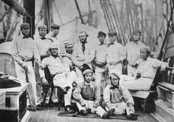
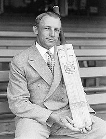
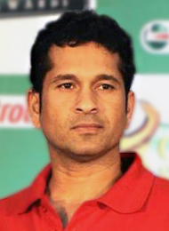

CRICKET HISTORY
Early cricket was at some time or another described as "a club striking a ball (like) the ancient games of club-ball, stool-ball, trap-ball, stob-ball".[3] Cricket can definitely be traced back to Tudor times in early 16th-century England. Written evidence exists of a game known as creag being played by Prince Edward, the son of Edward I (Longshanks), at Newenden, Kent in 1301[4] and there has been speculation, but no evidence, that this was a form of cricket.

A number of other words have been suggested as sources for the term "cricket". In the earliest definite reference to the sport in 1598,[5] it is called creckett. Given the strong medieval trade connections between south-east England and the County of Flanders when the latter belonged to the Duchy of Burgundy, the name may have been derived from the Middle Dutch[6] krick(-e), meaning a stick (crook); or the Old English cricc or cryce meaning a crutch or staff.[7] In Old French, the word criquet seems to have meant a kind of club or stick.[8] In Samuel Johnson's Dictionary, he derived cricket from "cryce, Saxon, a stick".[9] Another possible source is the Middle Dutch word krickstoel, meaning a long low stool used for kneeling in church and which resembled the long low wicket with two stumps used in early cricket.[10] According to Heiner Gillmeister, a European language expert of Bonn University, "cricket" derives from the Middle Dutch phrase for hockey, met de (krik ket)sen (i.e., "with the stick chase").[11]
Dr Gillmeister believes that not only the name but the sport itself is of Flemish origin.[12]
The first English touring team on board ship at Liverpool in 1859
The earliest definite reference to cricket being played in England (and hence anywhere) is in evidence given at a 1598 court case which mentions that "creckett" was played on common land in Guildford, Surrey, around 1550. The court in Guildford heard on Monday, 17 January 1597 (Julian date, equating to the year 1598 in the Gregorian calendar) from a 59 year-old coroner, John Derrick, who gave witness that when he was a scholar at the "Free School at Guildford", fifty years earlier, "hee and diverse of his fellows did runne and play [on the common land] at creckett and other plaies."[13][14] It is believed that it was originally a children's game but references around 1610[14] indicate that adults had started playing it and the earliest reference to inter-parish or village cricket occurs soon afterwards. In 1624, a player called Jasper Vinall was killed when he was struck on the head during a match between two parish teams in Sussex.[15]

During the 17th century, numerous references indicate the growth of cricket in the south-east of England. By the end of the century, it had become an organised activity being played for high stakes and it is believed that the first professionals appeared in the years following the Restoration in 1660. A newspaper report survives of "a great cricket match" with eleven players a side that was played for high stakes in Sussex in 1697 and this is the earliest known reference to a cricket match of such importance.
The game underwent major development in the 18th century and became the national sport of England. Betting played a major part in that development with rich patrons forming their own "select XIs". Cricket was prominent in London as early as 1707 and large crowds flocked to matches on the Artillery Ground in Finsbury. The single wicket form of the sport attracted huge crowds and wagers to match. Bowling evolved around 1760 when bowlers began to pitch the ball instead of rolling or skimming it towards the batsman. This caused a revolution in bat design because, to deal with the bouncing ball, it was necessary to introduce the modern straight bat in place of the old "hockey stick" shape. The Hambledon Club was founded in the 1760s and, for the next 20 years until the formation of MCC and the opening of Lord's Old Ground in 1787, Hambledon was both the game's greatest club and its focal point. MCC quickly became the sport's premier club and the custodian of the Laws of Cricket. New Laws introduced in the latter p
art of the 18th century included the three stump wicket and leg before wicket (lbw).
Don Bradman of Australia had a Test average of 99.94 and an overall first-class average of 95.14, records unmatched by any other player.[16]
The 19th century saw underarm bowling replaced by first roundarm and then overarm bowling. Both developments were controversial. Organisation of the game at county level led to the creation of the county clubs, starting with Sussex CCC in 1839, which ultimately formed the official County Championship in 1890. Meanwhile, the British Empire had been instrumental in spreading the game overseas and by the middle of the 19th century it had become well established in India, North America, the Caribbean, South Africa, Australia and New Zealand. In 1844, the first international cricket match took place between the United States and Canada (although neither has ever been ranked as a Test-playing nation).
Sachin Tendulkar of India was rated by Wisden Cricketers' Almanack in 2002 as the second greatest Test batsman of all time, behind Don Bradman.
In 1859, a team of England players went on the first overseas tour (to North America). The first Australian team to tour overseas was a team of Aboriginal stockmen who travelled to England in 1868 to play matches against county teams.[17] In 1862, an English team made the first tour of Australia and in 1876–77, an England team took part in the first-ever Test match at the Melbourne Cricket Ground against Australia.
W.G. Grace started his long career in 1865; his career is often said to have revolutionised the sport.[18] The rivalry between England and Australia gave birth to The Ashes in 1882 and this has remained Test cricket's most famous contest[citation needed]. Test cricket began to expand in 1888–89 when South Africa played England. The last two decades before the First World War have been called the "Golden Age of cricket". It is a nostalgic name prompted by the collective sense of loss resulting from the war, but the period did produce some great players and memorable matches, especially as organised competition at county and Test level developed.
The inter-war years were dominated by one player: Australia's Don Bradman, statistically the greatest batsman of all time. It was the determination of the England team to overcome his skill that brought about the infamous Bodyline series in 1932–33, particularly from the accurate short-pitched bowling of Harold Larwood. Test cricket continued to expand during the 20th century with the addition of the West Indies, India, and New Zealand before the Second World War and then Pakistan, Sri Lanka, and Bangladesh in the post-war period. However, South Africa was banned from international cricket from 1970 to 1992 because of its government's apartheid policy.
Cricket entered a new era in 1963 when English counties introduced the limited overs variant. As it was sure to produce a result, limited overs cricket was lucrative and the number of matches increased. The first Limited Overs International was played in 1971. The governing International Cricket Council (ICC) saw its potential and staged the first limited overs Cricket World Cup in 1975. In the 21st century, a new limited overs form, Twenty20, has made an immediate impact.
SOURCE:
BACK